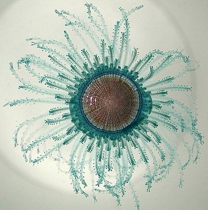

Рассмотрим некоторых представителей этой категории.
Dendrogramma enigmatica.
Известен по фрагментам, найденным на дне океана к югу и юго-востоку от Австралии. Первые экземпляры Dendrogramma были найдены в 1986 году, но описаны лишь в 2014. Определить её систематическое положение тогда не удалось даже с точностью до типа, и загадочное животное получило широкую известность. Находка вошла в «Десять самых замечательных видов» года; высказывалось предположение, что она близка к организмам эдиакарской биоты, существовавшей около 600 млн лет назад. В 2015 году были обнаружены новые экземпляры, а в 2016 опубликованы результаты их молекулярных исследований, установивших принадлежность организма к сифонофорам и фрагментарность найденных экземпляров. При этом два ранее описанных вида были сведены в один.
Порпита.
Диаметр 2,5 см. Ствол порпиты превращён в плоский кружок с гладкой поверхностью и с плоским же кружковидным воздушным аппаратом, состоящим из разделенных вертикальными перегородками концентрических камер. Стенки аппарата из плотного органического вещества, напоминающего хитин. Камеры сообщаются между собой и с окружающей средой рядом мелких отверстий. На нижней стороне кружка помещается большой центральный полип (желудочный мешок), с полипоидными или медузоидными придатками. Немного отступая от периферии висят щупальца. Питательные каналы расходятся от желудочной полости в виде сети и находятся в сообщении с полостями маленьких полипов.
